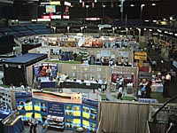

 Saskatchewan, because of its central location, friendly people and excellent facilities, hosts many special event,trade shows and conventions each year. Saskatchewan Place is a huge arena located in Saskatoon that hosts many events from hockey to rock concerts. | |||
Join fun-loving Saskatchewan people at over 600 hundred special events this year. See bizarre races featuring gophers, chickens and rubber ducks. Enjoy the thrill of watching Dragon boats racing down the South Saskatchewan River in Saskatoon in early summer or see them on Wascana Lake in Regina as the summer ends. Or, kick off exhibition week in Saskatoon by watching the traditional Louis Riel Relay Race featuring canoeing, running and horseback riding. The river in Saskatoon becomes a raceway in mid-July with the River Roar Powerboat races. See these machines go over 200 km/hour and turn on a dime. They weave under the Victoria bridge in a blur. The best viewing area for many of the river events is high above on one of the city's bridges. Travel to Regina for the Cathedral Arts Festival in May ( a fun, busking street fare) or try Bazaart in June on the grounds of the MacKenzie Art Gallery. This outdoor art and craft festival is the largest in Saskatchewan and has been running for over 25 years. similar event is Waterfront, held each August on the grounds of the Mendel Art Gallery in Saskatoon. If you are looking for the best in artisans, these festivals and many others, like the Saskatchewan Handicraft Festival held in July each year in the Battlefords will get you shopping. Many similar winter sales take place in the major centers. | |||
Relive the old west through frontier festivals and rough and tumble rodeos. Check out the rodeo in the community nearest you or see the All Star Pro Rodeo at Sask. Place in the fall. Check out Agribition or the Farm Progress Show, both in Regina. Vetavision, put on by the Western College of Veterinary Medicine is a great place to get close to the animals. Back to Batoche Days at Batoche are a wonderful way of reliving some of the traditional cultures of Saskatchewan's metis population. Attend a powwow at either the Saskatchewan Indian Federated College in Regina, or one at Onion Lake or Prince Albert or any of the other Aboriginal celebrations that occur during the year in our province. Special events at Saskatoon's Wanuskewin Park are worth the trip -- there is everything from dancing to sightseeing to games for everyone. | |||
In Saskatoon, watch Shakespeare performed under a circus tent by the South Saskatchewan River, walk down Broadway Avenue and catch some of the Fringe Festival (alternative theatre) or attend the Flatland Music Festival in Victoria Park in Regina. The Ness Creek Music Festival, new to the province (just shy of a decade) occurs in midsummer in northern Saskatchewan. Mosaic, in Regina, and Folkfest, in Saskatoon, are two attractions not to miss out on. Both events showcase the diverse culture of Saskatchewan. Over twenty different ethnic pavilions at each festival offer food, entertainment and lots of culture. Passports allow you to travel around the world in three days for under $20.00. Not bad value!!! Why not attend both -- Mosaic in June and Folkfest in August? | |||
Saskatchewan has events for every taste. Country music's best performers shine at the Big Valley Jamboree. The Saskatchewan Jazz Festival brings the strains of Bourbon Street north to Saskatoon. The Snowbirds soar at the Saskatchewan Air Show in Moose Jaw, see the Canada Remembers Air Show in August in Saskatoon or watch the Saskatchewan Roughriders stage their own air display at Regina's Taylor Field. Children and parents can enjoy the Southern and Northern Children's Festival. Both are packed full of over five days of activities, plays, music, games and fun. | |||
Whether you like thresherman's shows or folk festivals, fiddling championships or off-beat theatre, you'll find good times - and great people - waiting for you. Be sure to make it to any one of the Western Development or Heritage Museums for blacksmithing displays, old agricultural technique demonstrations and of course, homemade ice cream. The Saskatchewan Events Guide by Saskatchewan Tourism is published each year, complete with event dates, times and locations within the province. Enjoy! |